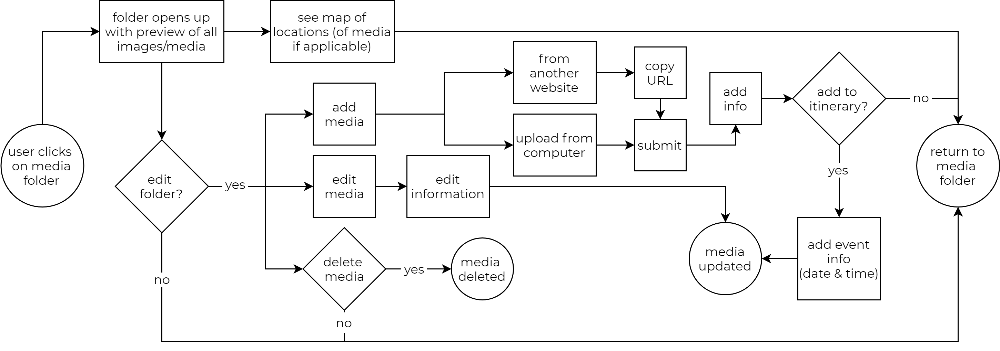
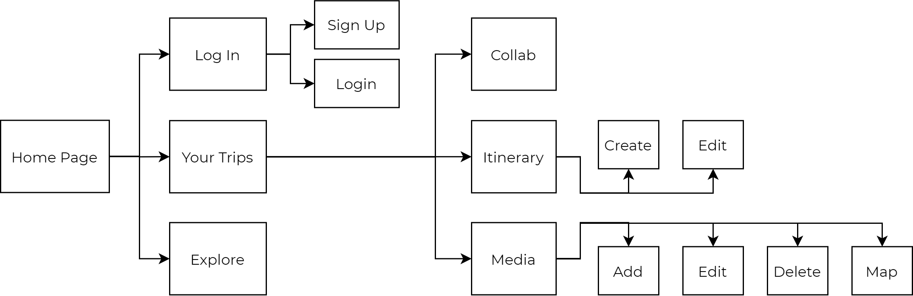
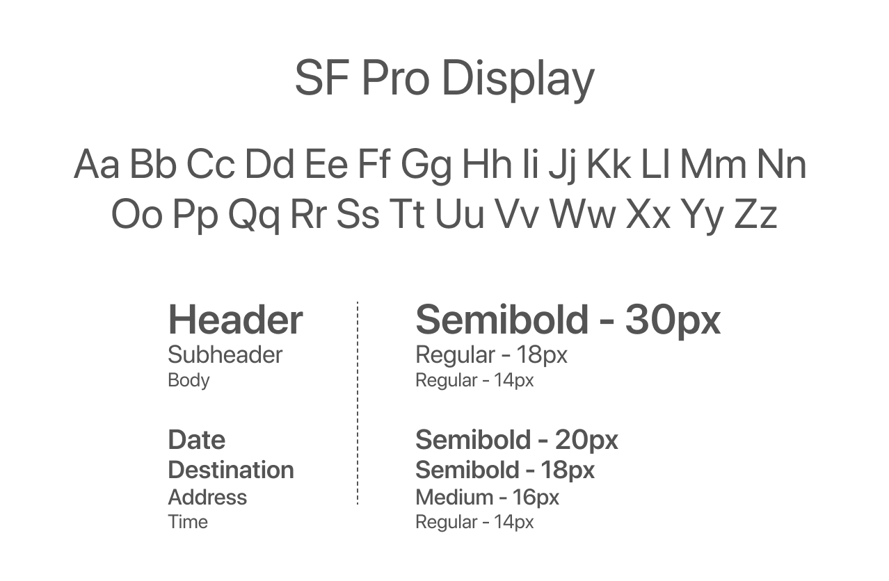

The Wander Project
The Wander Project wants to change how you make itineraries with a responsive website with mobile application capabilities that allows users to use social media as inspiration.
Whether it’s wanderlusting, planning a business trip, a staycation, or a trip abroad, there are different circumstances for each trip, but no matter what stage of planning you’re at, the Wander Project has everything you need to make it your best trip ever! As an avid adventurer, I was happy to help with the design and development process.
Proposal
I was brought on to help design a new application for Cloud storage and organization and to be able to combine it with collaboration. The application had to be able to save and organize content, and be able to collaborate or social share.
Problem
I wanted to create an application that makes trip planning easier. Trip planning can be overwhelming, whether it’s for yourself, a business trip, or for a group of people.
Solution
I wanted to create an application that centralized everything from finding inspiration and doing research to finalizing a coherent itinerary.
Deliverables
// UX Research
// Wireframes and Mockups
// Branding
// Style Guide
// Usability and Preference Testing
// Figma Prototype
Research
User Survey
In order to better understand how people used cloud storage and planned their trips, I conducted an online survey to get a general consensus. I wanted to know:
How often does the average person use cloud storage?
What can be improved with current cloud storage apps?
What is the average person’s trip planning process?
What is the most frustrating thing about trip planning?
After a couple of days of collecting results, I found that:
63%
use cloud storage at least 1-2 times a week (if not more).
73%
research and plan out an itinerary before trips.
55%
of planners said their browsers get too cluttered during the research process.
46%
of planners said it gets too difficult when planning with multiple people.
Competitive Analysis
I took a look into different apps such as Pinterest, a cloud storage app, Google Trips, a trip planning app, and GroupMe, a social messaging app, to compare and contrast the strengths and weaknesses.

Pinterest: a cloud storage app that uses social media to pass information.
Very visually based app with social media aspects, such as liking, commenting, and sharing.
Users are able to easily organize their “pins”, or saved media.
Multiple people are able to collaborate on one “board” or project.

Google Trips: Google’s take on trip planning.
Syncs reservations from Google Mail.
Has a small selection of guides and suggestions, however doesn't include others' reviews or ratings.
Basic itinerary making app - nothing too special.
GroupMe: A messaging app that connects users in a group or individually.
Easy to share messages, photos, and other media.
Shared media is organized in its own gallery.
Doesn’t have offline access - renders app useless if data/wifi isn't available.
User Personas
After conducting my research, I knew that every trip planned would have different needs that need to be met. So I created three different types of people that would ideally use the app.

Information Architecture
User Stories
With these people in mind, I created a list of tasks I wanted the app to be able to perform, and rated their importance from High to Low.
Task - New User
I want to create an account.
I want to browse without logging in.
High
High
Task - Returning User
I want to create an itinerary.
I want to organize all my media files.
High
High
User Flows
Based on the importance of the task, I created flow charts of the steps a user would have to take to achieve these tasks. While there are a lot of things that needed to be implemented, the top three user stories were for creating an account, organizing and adding media, most importantly, creating an itinerary.
1. As a new user, I want to create a new account.

2. As a user, I want to organize and add media.

3. As a user, I want to create a new itinerary.

Sitemap
With user stories and flows planned out, it was easy to stitch the pieces together with an overarching sitemap. This helped create content strategy, and provided a reference to look to when designing the screens.
Wireframing & Usability Testing
With the user flows planned out, I was able to start building the wireframe for the desktop website. I started ideating on paper, trying to get a general feel of what the website should look like, and to make sure all my frames checked off all the tasks of the flow chart.
After that, it was easy to transfer my drawings onto Figma. With the basic structure of the website, sans design, color, font, or images, I was able to hash out the general flow of how I wanted things to go.
With the basic structure built, it was time to conduct my first usability test to make sure everything was being perceived as it was intended. Some major feedback that I received included:
Sizing issues on pop-up leaves and typeface.
Orientation of Friends’ feed and Explore feed seems awkward.
The intentions of some buttons weren’t very clear.
UI reads more as a social media platform.
Branding
Logo
To create the logo, I started off with possible names by using word play with travel-esque words. I finally decided on The Wander Project, which to me perfectly describes what making an itinerary is. I sketched out icons that portrayed travel or exploration, such as airplanes, compasses, and maps. I decided on the compass because I liked the circular aspect of it and iterated logos playing around with the words and shape of the compass.
Color & Typeface
I first decided on a color scheme and started looking for inspiration to create a moodboard and decided to model it after the ocean. I felt that most of my favorite places to travel have some sort of body of water and the ocean always gave me wanderlust and a sense of adventure, which is how I wanted the user to feel when planning for their trip.

I chose a sans-serif because of its minimalistic properties. Since planning a trip can be stressful, I didn’t want the user to be overwhelmed with an overload of information.
Style Guide
After finalizing a logo and essentially a brand, I wanted to make sure everything was consistent with one another before “dressing up” the wireframe. Creating a style guide, or a set of standards allowed me to make sure I didn’t have slightly different variations of the same color, or font that kept on changing as you used the app.

Prototypes & Testing
Hi-Fidelity Prototypes
With a style guide established, I built the first working prototype. These are a few of my favorite pages: the landing page after you log-in, your itinerary with a map view, and your list of itineraries.
Preference Testing
But before I conducted another round of usability testing, I had a few issues with the design and was unsure if my design properly showcased what I wanted to convey. I conducted a series of preference testing that looked at everything from borders, spacing, colors, and alternating images. I wanted to make sure my design was not only aesthetically pleasing, but also functioned properly as well.


Usability Testing
After implementing the preferred stylizing, I conducted another round of usability testing which gave me really good feedback on small details that I needed to pay more attention to. Some key fixes that came out of usability testing included:
Reads like a social feed; wanted to see more aspects of social media, such as liking, commenting, and seeing who posted it.
Having “coming up” and “past” sections in the itineraries page for better organization.
Being able to share itinerary with other users instead of only being able to collaborate.
Otherwise, the general consensus was that they loved how easy it was to use and how aesthetically pleasing the mobile application was. With this feedback, I was able to address the issues I thought were most important and created my final prototype.

Conclusion
I am really happy with the end prototype for this project, but also see areas which can be improved on. Although I have worked on concept projects before, this was the one where I learned the importance of usability testing. I knew what I wanted to convey to the user, but I didn’t realize that my intended designs can be conveyed differently by the potential audience; getting feedback from various people made my project stronger. I always knew what aspects I wanted to implement, but it’s the little things that I didn’t catch which makes usability testing so important.